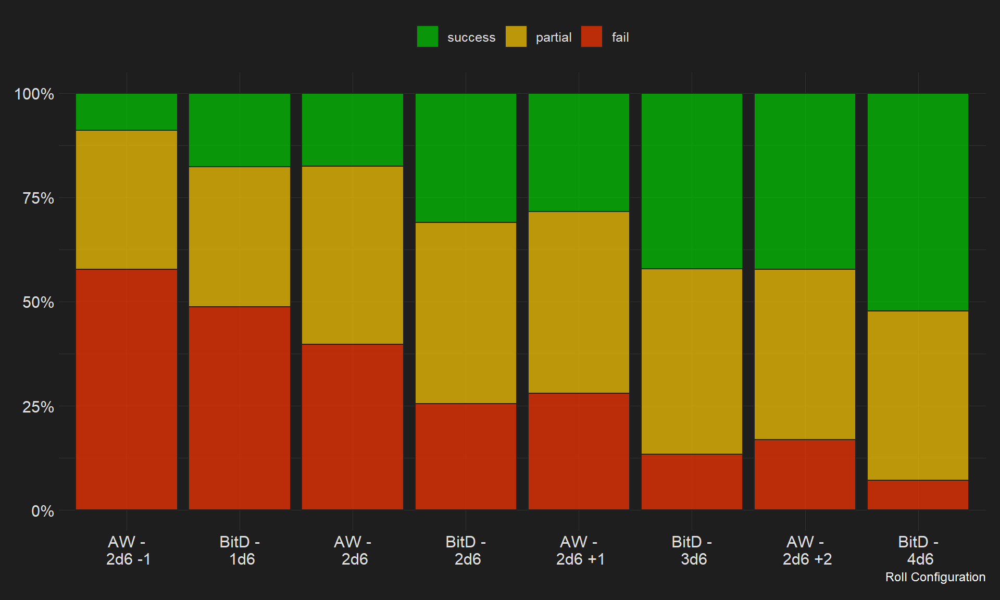
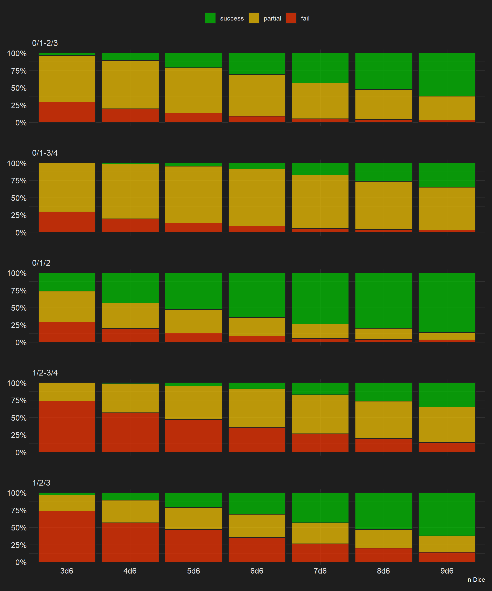

tl;dr: I wrote this once already, then the IDE just… quit. Now I’m not inclined to repeat myself anytime soon. >=(
Checks from different Systems
Let’s take a look at some d6-based games and how they resolve their rolls:
- Apocalypse World: roll 2d6 and add their results; on a 10+ you succeed, on 7-9 you succeed but at a cost and on 6 or less you usually fail
- Blades in the Dark: roll several d6 (usually 1-4) based on your stats and take the single highest result; you succeed on a 6 and even gain some extra on two 6s (critical success), a 4 or 5 is a partial success similar to the above and on a 1-3 “it’s a bad outcome. Things go poorly. You probably don’t achieve your goal and you suffer complications, too”1
- Shadowrun: you roll anything from 1 to 30 dice (usually about 3 to 12 though) and count all 5s, 6s (your successes) and 1s (if more than half of the rolled dice are 1s, you fail spectacularly); there are no baseline thresholds - sometimes you ‘roll off’ against the GM, sometimes there are rules to dictate the threshold and rather often the GM comes up with some arbitrary number you need to pass
Additionally there are ways to tinker with the results and alter the player’s chances. In AW you sometimes flatly add (or substract) numbers to the result. BitD gives or takes dice to or from you and the same does SR, albeit with more dice.
As you can see, the first two examples are quite similar and pretty straight forward, whereas the third is a whole different kind of beast. This is why I’m writing this: I’ll simulate the outcomes of the different approaches and try to find one that feels shadowrun but resolves in a distinct way like with the other two.
Additional Mechanics
I guess? Idk yet.
Simulations
This is the interesting part. How do AW and BitD compare and how does SR fit in? I begin with sampling, oh let’s just say, 2000 rolls - where ‘a roll’ is full skill check instead of single dice rolls. For simplicity, I only make 2000 rolls for each game once.

As we can see, the results largely scale up the same, although in Blades in the Dark rolls are more forgiving than in Apocalypse World; out otherwise, the success rates in BitD are generally a little higher. This suits the general vibes of the games: in BitD, the consequences of failing are more dire overall, therefore it’s kinda fair you don’t fail too easy or often. Let’s take a look at Shadowrun, though. First at the raw number of successes (5s and 6s) and then by setting some thresholds to shoehorn everything into three success qualities.
Sequential Cut-Offs
Since it’s not possible to have 3 qualites with only one die by Shadowrun standarts (the roll is either a success or not), we’ll start with 2d6:

Ok, maybe we need to zoom in a bit.

Footnotes
quoted from https://bladesinthedark.com/core-system↩︎